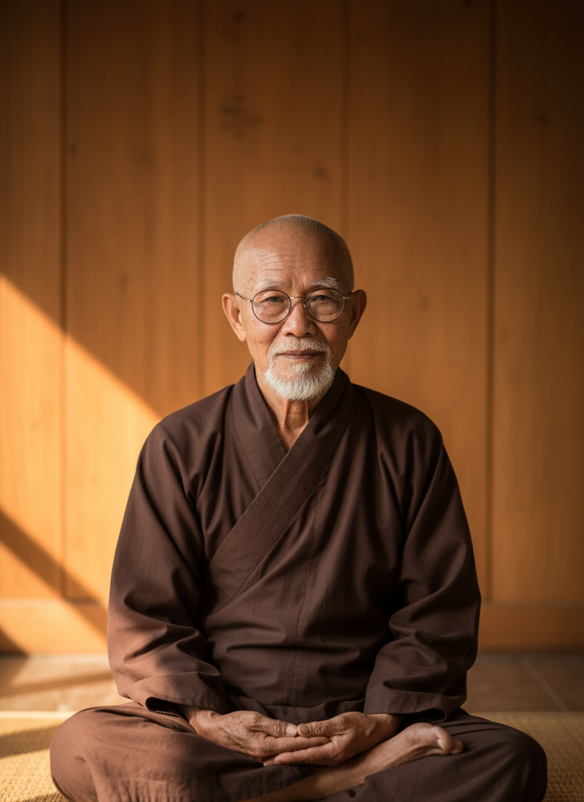
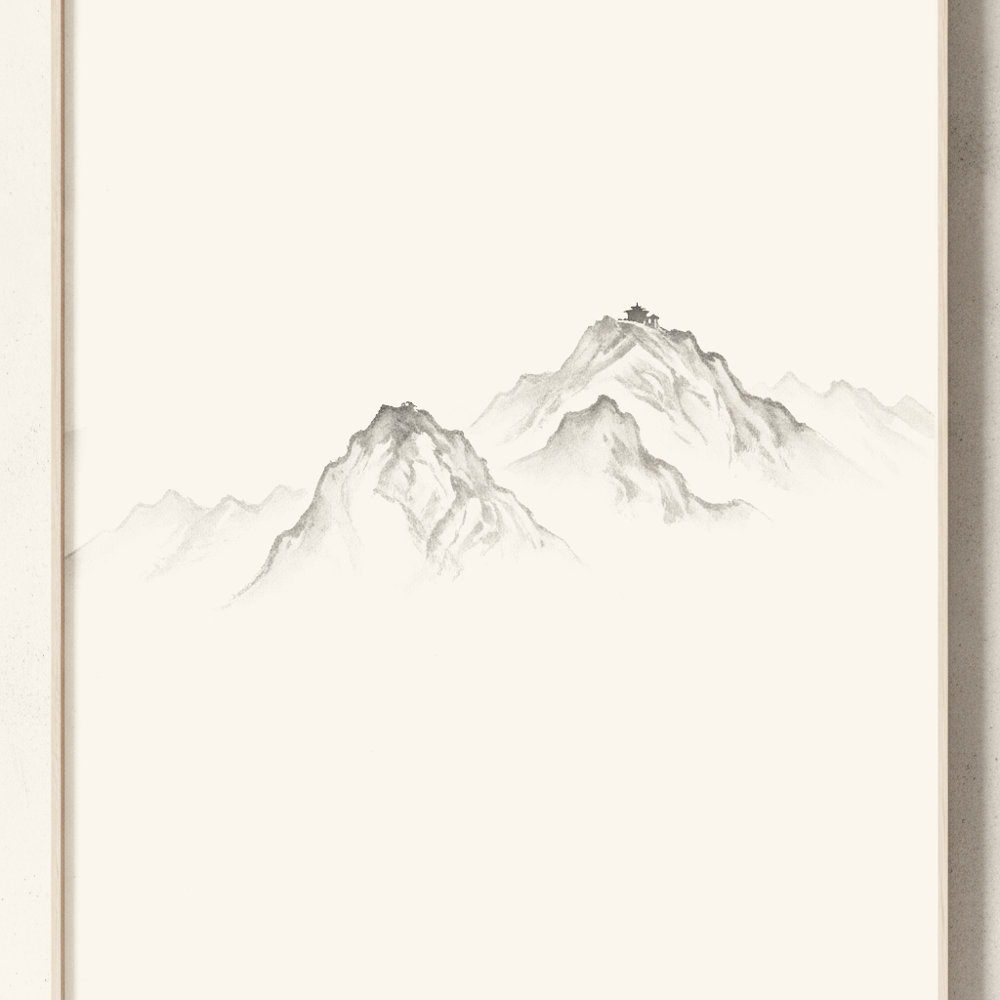
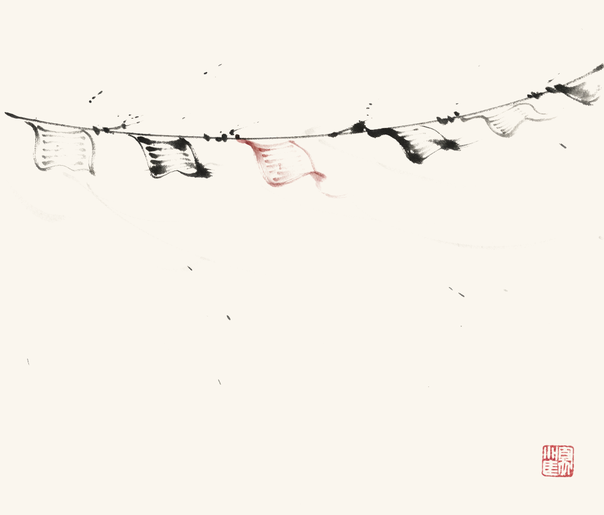
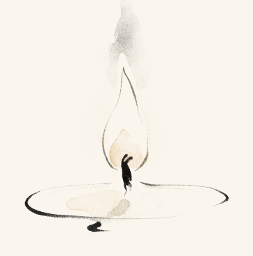

O Silêncio Entre Pensamentos
Trinta dias de pequenas práticas
para uma mente que não para de falar
para uma mente que não para de falar

Este livro acompanha uma prática. Não substitui nenhum médico e nenhum remédio.


Você não encontrou este livro porque a sua vida está quebrada. Encontrou porque a sua mente é barulhenta, e você desconfia de que não precisa ser assim.
Passei quarenta anos aprendendo uma coisa em silêncio: a paz não se encontra mudando o lugar onde você vive. Encontra-se mudando o modo como você encontra a própria mente. Essa frase é fácil de ler e lenta de aprender. Os trinta dias deste livro são o modo como eu a ensino.
Cada dia pede dez minutos, às vezes menos. Um ensinamento curto. Uma prática pequena. Uma linha para escrever. É só isso. Não leia adiantado. Um dia lido em um minuto não faz nada; um dia vivido muda o dia seguinte.
Algumas práticas vão parecer simples demais para importar. Faça mesmo assim. Um copo de água ao lado da cama é uma coisa pequena. Um único fósforo em um quarto escuro também é.
Se você perder um dia, não falhou. Recomece de onde parou. O caminho não guarda rancor de quem anda devagar. Ele só pede que você continue andando.
Os primeiros minutos da manhã pertencem a quem os toma para si.
A maioria das pessoas perde o dia nos seus dois primeiros minutos. O alarme toca, a mão busca o telefone, e antes que os pés toquem o chão elas já convidaram mil estranhos para dentro do quarto. As notícias, as mensagens, o barulho. Depois se perguntam por que o dia parece pesado antes mesmo de começar.
Os primeiros minutos depois de acordar são os mais receptivos de todo o seu dia. A sua mente ainda não recebeu nada de ninguém. O que você coloca ali primeiro dá o tom de tudo o que vem depois. Hoje, você escolhe o que entra primeiro.
O que entrou primeiro na sua mente esta manhã, e foi você quem escolheu?
A água responde a quem a toca.
Hoje à noite você vai fazer algo que o meu mestre me pediu na minha primeira noite no mosteiro. Eu achei que aquilo era pouco para mim. Eu estava errado sobre isso, e sobre quase tudo naquele ano.
Antes de dormir, encha um copo com água limpa e segure-o com as duas mãos. Diga baixinho: enquanto eu descanso, solte o que é pesado. Coloque-o ao lado da cama. De manhã, olhe para ele antes de olhar para qualquer outra coisa. Depois jogue a água fora.
A água leva as suas preocupações para fora do quarto? Eu não vou dizer no que você deve acreditar. Vou dizer o que você pode comprovar: o ritual encerra o seu dia com um ato feito de propósito, e não com o dedo na tela. Ele dá forma ao seu último pensamento acordado, e coloca algo entre você e o telefone pela manhã. Um ritual é uma alça para segurar a mente. A mão que busca um copo não está buscando uma tela.
O que você notou no momento antes de jogar a água fora?
O seu corpo não entende piada. Ele entende repetição.
Hoje, nenhum ritual novo. Hoje você apenas vigia a sua boca.
Cada palavra que você diz sobre si mesmo é recebida como uma ordem. Diga “sou burro, sou fraco, eu sempre falho”, mesmo rindo enquanto diz, e o corpo não ri. Ele se prepara. Os ombros ficam duros, a respiração fica curta, a mente monta guarda. Muitas pessoas não foram amaldiçoadas pela vida. Foram amaldiçoadas pelo jeito como falam consigo mesmas.
Você não precisa gritar frases bonitas na frente do espelho. Apenas pare de se ferir com a própria boca. Fale consigo mesmo como falaria com um amigo cansado. Mude o jeito de falar, e devagar a sua vida começa a escutar.
Quantas vezes você pegou a voz antiga hoje?
Você respirou vinte mil vezes hoje. Quantas dessas você encontrou?
A respiração é a única porta que está sempre aberta. Você não consegue acalmar os pensamentos mandando que se acalmem. Você consegue desacelerar a respiração, e os pensamentos descem com ela, como pássaros que pousam depois de um bater de palmas.
Não há nada de místico nesta parte. Um sopro longo para fora avisa ao corpo que o perigo passou. Toda tradição encontrou esta porta porque toda tradição tinha seres humanos, e os seres humanos sempre precisaram de um caminho de volta.
Para onde a sua mente foi primeiro, e como você a trouxe de volta?
O que você protege em silêncio trabalha com mais força.
Antes de falar com qualquer pessoa amanhã de manhã, sele o seu dia. Faça isso antes que o mundo entre em você.
Coloque a mão sobre o centro do peito. Sinta o calor da sua própria palma. Diga em silêncio: eu protejo o meu dia. Eu protejo o meu caminho. O que é meu me pertence. Fique ali um momento quieto antes de se levantar.
O gesto leva dez segundos. O seu trabalho é simples e real: você não consegue colocar a mão no peito e dizer essas palavras enquanto rola a tela, discute ou corre. Por dez segundos você está em um lugar só. A maioria das pessoas não visita esse lugar o dia inteiro.
O dia pareceu diferente do outro lado desses dez segundos selados?
A xícara é pequena para que você olhe para ela.
No mosteiro, o chá nunca foi uma bebida. Era um relógio que media a atenção. Um visitante que bebia em um gole só era escutado com educação e não aprendia nada. Não por crueldade, mas porque não havia nele lugar onde algo pudesse pousar.
Hoje, uma xícara, tomada devagar, sem telefone por perto. Observe o vapor. Sinta o calor passando para as suas mãos. Prove o primeiro gole como se depois fossem pedir que você o descrevesse. Essa é a prática inteira. Parece nada. Uma chave girando na fechadura também parece.
O que você notou na xícara que nunca tinha notado antes?
Descansar também é uma prática. Talvez a mais difícil.
Seis dias de prática ficaram para trás. Hoje você não acrescenta nada.
Repita apenas o que já se tornou seu: as quatro frases, ou os dez segundos selados, ou a xícara lenta. Escolha uma. Deixe as outras descansar. Um caminho não se constrói andando por ele inteiro todos os dias.
Perceba, hoje à noite, qual prática fez falta quando você a pulou. Essa saudade é informação. Ela mostra qual porta é a sua.
Qual prática você defenderia se alguém tentasse tirá-la de você?

O sal nunca foi só para a comida.
Espalhe uma camada grossa de sal grosso no chão. Suba nela com os pés descalços, e apenas fique parado.
Sinta os grãos apertando as solas dos pés. As solas dos pés estão entre as superfícies mais sensíveis do corpo, e milhares de terminações nervosas acordam de uma vez. A sua atenção desce da cabeça acelerada e pousa, inteira, nos seus pés. Os ombros amolecem. A respiração desacelera.
No nosso mosteiro, o sal marcava uma fronteira: entre o dia que se acumulou e a noite que merece coisa melhor. Dez minutos quietos. Essa é a prática inteira. O sal traz você para dentro do corpo. Guardar a calma depois que você desce do sal, essa é a arte mais funda, e é para isso que serve o resto deste livro.
O que os seus pés disseram que a sua cabeça estava barulhenta demais para ouvir?
As mãos tocam tudo o que o dia contém. Deixe que elas o terminem limpas.
Hoje à noite, lave as mãos devagar, com intenção, como o último ato do dia. Não a lavada rápida do costume. Água tão morna quanto for gostoso, e enquanto a água corre sobre as suas mãos, diga baixinho: o que eu carreguei hoje, eu deixo no chão.
Você apertou mãos, segurou um telefone cheio de brigas, segurou um volante no trânsito, segurou o próprio rosto na preocupação. As mãos estiveram presentes em tudo. Terminar o dia lavando as mãos de propósito é um jeito de dizer ao corpo inteiro: acabou, você pode parar de carregar.
Não há aqui nenhuma promessa sobre energia em que você deva acreditar. A promessa é menor e mais difícil: você não vai conseguir fazer isso devagar, dizendo essas palavras, enquanto ainda repete na cabeça a discussão do meio-dia. O ritual não deixa espaço para a ruminação. Isso basta.
O que foi mais difícil de deixar no chão esta noite?
O corpo sabe comer. Raramente deixam que ele coma.
Escolha uma refeição hoje e dê a ela silêncio. Sem tela, sem leitura, sem conversa. Só você e a comida, e o barulho estranho da sua própria mastigação, que vai dar vergonha por exatos dois minutos e depois vai virar paz.
Coma mais devagar do que de costume. Pouse o garfo entre uma garfada e outra, não como truque de dieta, mas como cortesia com a refeição. Perceba quando o corpo diz chega. Ele diz baixinho, e diz mais cedo do que a mente, que come por outros motivos: tédio, consolo, o relógio.
Uma refeição em silêncio não vai mudar o seu corpo. Ela vai mostrar como você raramente está presente para aquilo que mantém você vivo. Vale a pena ver isso uma vez por dia.
Quando o corpo disse chega, e você escutou?
Uma caminhada com propósito é uma tarefa. Uma caminhada sem propósito é uma vassoura para a mente.
Hoje, caminhe por vinte minutos sem destino, sem telefone na mão, sem nada nos ouvidos. Sim, vai parecer perda de tempo. Essa sensação é o objetivo. Você está ensinando à mente que nem todo minuto precisa render alguma coisa.
Caminhe um pouco mais devagar que o seu costume. Deixe os olhos descansarem nas coisas distantes: telhados, céu, o fim das ruas. Quando uma preocupação chegar, não lute contra ela. Deixe que ela caminhe ao seu lado, como um cachorro que vai se cansar antes de você. Ele sempre se cansa.
O que você viu acima da altura dos olhos que já tinha passado por cem vezes sem ver?
A tensão se esconde onde a atenção nunca visita.
Deite de costas esta noite, na cama ou no chão, braços ao lado do corpo. Você vai visitar o corpo inteiro, devagar, como um vigia que percorre um prédio à noite, conferindo cada porta.
Comece pelos pés. Deixe a atenção ali até conseguir senti-los sem mexê-los. Depois os tornozelos, as panturrilhas, os joelhos, e assim para cima, algumas respirações lentas em cada lugar. Quando encontrar tensão, e você vai encontrar, no maxilar, nos ombros, nas mãos, não mande que ela solte. Apenas fique ali, respirando, como quem faz companhia. Muitas vezes a tensão guardada solta sozinha, só porque enfim alguém veio olhar para ela.
Onde o seu corpo guarda os segredos dele? Esta noite você encontrou pelo menos um lugar.
O dia velho sai na água. Ele nunca esteve colado em você.
Amanhã de manhã, antes que o espelho diga qualquer coisa, junte água fria nas mãos e leve ao rosto. Três vezes. Sinta o choque, o frio se espalhando, a respiração que prende e depois se aprofunda sozinha.
Água fria no rosto faz uma coisa simples e imediata: ela interrompe. O meio sonho, o meio medo que a noite montou é cortado no meio da frase, e por um instante existe apenas frio, pele, respiração. Nesse vão, você pode escolher o primeiro pensamento verdadeiro do dia, em vez de herdar um.
Meu mestre chamava isso de lavar o rosto de ontem. Ele não estava fazendo poesia. Ele falava do rosto que você fez o dia inteiro ontem, o maxilar preso, o rosto de plateia. Ele não é seu. Deixe que desça pelo ralo.
Qual foi a sua palavra desta manhã, e o dia obedeceu a ela?
Metade do caminho ficou para trás. Olhe para trás uma vez, depois pare de olhar.
Duas semanas. Catorze portas pequenas, e você abriu quase todas. Hoje, como em todo sétimo dia, você não acrescenta nada de novo.
Leia as linhas do seu caderno dos primeiros treze dias. Leia devagar, como se um estranho as tivesse escrito, porque em certo sentido foi assim: a pessoa que começou este livro não é bem a mesma que o lê agora. As mudanças são pequenas. Elas devem ser pequenas. Uma porta não precisa se mover muito para deixar entrar uma luz diferente.
Esta noite, escolha a prática desta semana que o seu corpo pediu de novo. O corpo vota com honestidade. Siga o voto dele.
O que mudou em silêncio, que ninguém mais notaria ainda?

A mente está sempre comendo. Hoje ela jejua por uma hora.
Por uma hora hoje: sem telefone, sem música, sem podcast, sem livro, sem tela. Nada entrando. Você pode caminhar, sentar, cozinhar, limpar, olhar pela janela como as pessoas fizeram por cem mil anos.
Os primeiros vinte minutos incomodam de verdade. A mente, sem o seu alimento, vai sacudir a jaula: brigas lembradas, urgências que não são nada, uma vontade repentina de conferir uma coisinha só. Deixe que sacuda. Você não está sendo cruel com ela. Você está deixando o barro assentar em um pote de água de rio, e não há como apressar isso, a não ser parar de sacudir o pote.
Em algum ponto da segunda metade da hora, se você aguentar, chega um silêncio especial que talvez você não sinta há anos. Esse silêncio não é vazio. Ele é o gosto da sua própria companhia.
O que chegou no silêncio, depois que a jaula parou de sacudir?
Nem toda frase que você compõe merece um destinatário.
Em algum lugar dentro de você mora uma resposta que você vem escrevendo há dias: para um comentário, uma mensagem, um parente, um colega. Ela ensaia sozinha enquanto você toma banho. Ela se afia enquanto você tenta dormir.
Esta noite, escreva tudo, à mão se puder, do jeito injusto e completo que ela quiser sair. Depois, não envie. Dobre o papel. O objetivo nunca foi o destinatário. O objetivo é que essa frase morava em você sem pagar aluguel, e escrever é o jeito de entregar o aviso de despejo.
Você vai sentir a diferença na hora: uma mágoa ensaiada precisa de plateia para sobreviver. No papel, dobrada, ela tem um único leitor, e esse leitor já seguiu em frente.
De qual linha você mais se orgulhou, e para quem ela era de verdade?
O homem quieto não está se escondendo. Ele está escolhendo.
Hoje, gaste palavras como dinheiro que você respeita. Não é silêncio, não é fazer cara feia: é economia. Antes de falar, uma pergunta pequena: esta frase é melhor que o silêncio que ela substitui?
Você vai perceber quanta fala é enchimento jogado sobre o desconforto, concordância feita para agradar, repetição do que todos ali já sabem. Deixe essas frases morrerem cedo. O que sobrevive é fala com peso, e as pessoas ouvem a diferença na hora, mesmo sem saber dar nome a ela.
No mosteiro, o ancião que menos falava nunca era interrompido. Há aí uma lição sobre o que é raro e o que é valioso, mas há sobretudo uma lição sobre atenção: a sua, reunida em vez de espalhada.
Qual frase você não disse hoje, e o que aconteceu no lugar dela?
Você não foi feito para chorar pelo mundo inteiro antes do café.
Hoje, nada de notícias. Nem os aplicativos, nem os sites, nem o rádio no carro, nem as manchetes que um amigo recita no almoço, leve essas conversas para outro assunto. Um dia.
Entenda o que você está testando. Não é se o mundo importa. É se estar informado minuto a minuto muda alguma coisa além dos seus nervos. Se algo realmente grande acontecer hoje, você vai ficar sabendo. A aldeia sempre avisa quando o fogo é de verdade. O que o telefone entrega é diferente: mil incêndios que nenhum balde seu alcança.
Esta noite, pergunte o que você perdeu de fato. Quase sempre a resposta honesta é: nada que precisava de mim, e várias horas de um medo baixo que nunca achou um alvo.
O que você pegou no lugar das notícias, e foi melhor?
O estado da mesa é o estado da mente. Comece pela mesa. É mais fácil.
Escolha uma superfície que você vê todos os dias: a mesa da cozinha, a escrivaninha, a prateleira perto da porta. Esvazie tudo. Passe um pano. Devolva apenas o que pertence ali, e seja um juiz rigoroso desse pertence.
Não limpe a casa. Isso é outro dia e outro humor. Uma superfície inteira e pronta vale mais que um cômodo inteiro pela metade, porque o que você está praticando não é arrumação. É terminar. A mente descansa de outro jeito em um cômodo onde uma coisa, mesmo pequena, está completa de verdade.
Amanhã de manhã essa superfície vai cumprimentar você antes de qualquer pessoa. Deixe que um canto do seu mundo diga: resolvido.
Como a superfície limpa mudou o cômodo, e o que ela pediu para você limpar depois?
Silêncio não é a ausência de som. É a sala onde os sons estão de pé.
Sente perto de uma janela aberta por dez minutos hoje e apenas escute. Não dê nome ao que ouvir, ou tente não dar: a máquina de dar nomes é justamente o que está descansando. Um carro não é um carro. É algo que cresce e some. Um pássaro não é um pássaro. É três notas e um espaço.
Atrás do trânsito, dos vizinhos e da geladeira, existe outra coisa: o som de fundo do mundo, o silêncio dentro do qual tudo isso acontece. Você não o escuta fazendo força. Você o escuta do jeito que enxerga as estrelas fracas: olhando um pouco de lado.
Esta é a prática mais próxima daquela que deu nome a este livro. Entre dois sons, como entre dois pensamentos, há um vão. Ninguém consegue morar no vão. Mas saber que ele existe muda o quanto todo o resto tem permissão de ser barulhento.
O que você ouviu quando parou de dar nome às coisas?
Três semanas de pequenas portas. O corredor atrás de você é mais longo do que você pensa.
Dia de descanso. Você já conhece o formato: nada de novo, uma prática repetida, as linhas do diário da semana lidas devagar.
Mas acrescente isto, uma vez: sente por um momento e observe como o barulho trata você agora. O telefone no outro quarto, ele puxa como puxava no primeiro dia? As notícias, as respostas não enviadas, as palavras vazias. Nada disso desapareceu. Está mais quieto, ou você ficou maior. Dá no mesmo.
Falta uma semana, e ela é a mais profunda. As três primeiras limparam o terreno. A última constrói a casa.
O que está mais quieto agora: o mundo, ou a sua briga com ele?

Gratidão de mãos vazias é um discurso. Gratidão com arroz nas mãos é uma prática.
Hoje à noite, conte sete grãos de arroz na palma da mão. Olhe bem para eles: cada um foi uma planta, num campo, debaixo do tempo, cuidada por alguém cujo nome você nunca vai saber, carregada por mãos e estradas e navios até chegar à sua cozinha e ser ignorada.
Coloque os grãos num pratinho perto da janela, um de cada vez, e a cada grão diga o nome de uma coisa que alimentou você neste ano. Não as sete maiores coisas. As sete que vierem. Uma pessoa, uma refeição, uma manhã, um pedido de desculpas, um trabalho, uma canção, a paciência de um desconhecido no trânsito.
Deixe o pratinho perto da janela durante a noite. De manhã, devolva os grãos ao pacote ou dê aos pássaros. Gratidão não é um humor que se espera. É uma coisa que se faz com as mãos até o humor chegar, envergonhado do atraso.
Qual dos sete surpreendeu você só por ter vindo à mente?
Algumas palavras esperam décadas para atravessar um metro.
Hoje, diga uma coisa verdadeira a alguém que alimentou você, no sentido que for: uma mãe, um pai, quem esteve nesse lugar. Se a pessoa está viva, ligue. Não mande mensagem. Voz. Conte uma coisa específica que você lembra e nunca disse: as marmitas, a espera na porta da aula, o casaco dado numa caminhada fria.
Se a pessoa já se foi, ou se a relação é uma ferida, escreva as palavras no diário, com o nome da pessoa no começo, como numa carta. Dizer é tanto para você quanto para ela. Gratidão não dita endurece e vira um tipo estranho de luto, que visita em horas esquisitas. Dita, mesmo a uma página, fica mais leve e vira algo que se pode carregar.
Você vai reconhecer as palavras certas porque a sua voz vai resistir um pouco a elas. Diga assim mesmo. Ninguém nesta terra jamais se arrependeu desta prática por mais tempo do que durou a ligação.
O que você finalmente disse, e o que voltou?
Perdão não é um presente para o outro. É você, pousando uma pedra quente.
Existe um nome que ainda aperta o seu peito. Você sabe qual é antes de eu terminar a frase. Hoje você escreve para esse nome.
Escreva o que a pessoa fez. Escreva o que isso custou a você, com honestidade, sem heroísmo. E depois, só se for verdade, escreva a frase: estou cansado de carregar isto, e tenho o direito de pousar. Isso é o perdão. Não é um veredito de que o que aconteceu foi aceitável. É uma decisão sobre carga: as suas mãos têm coisas melhores para segurar.
Não envie. Esta carta tem um leitor só. Algumas feridas vão precisar desta carta mais de uma vez, e isso não é fracasso. É assim que as coisas pesadas se movem: por etapas, por uma pessoa, em silêncio.
O que carregar isso custou a você só neste ano?
Termine o dia como terminaria uma carta a alguém que você ama.
Não vá dormir sem dizer estas três coisas, a Deus, ao céu, ao que você confiar que é maior do que o dia. O endereço importa menos do que a honestidade.
Primeiro: obrigado por tudo o que eu não entendi hoje. Os atrasos, as portas fechadas, os planos que falharam. Eu não preciso do mapa inteiro para confiar na estrada. Segundo: eu pouso o que não posso controlar. Cada medo, cada peso, cada e se. Não vou levar para a cama; lá eles não têm onde dormir. Terceiro: me dê paz esta noite. Não apenas sono. Paz. E que algo em mim lembre, mesmo enquanto descanso, que coisas boas ainda trabalham em silêncio.
Diga devagar. A noite toma a forma da última coisa verdadeira que você diz para dentro dela.
Qual das três foi a mais difícil de dizer com verdade esta noite?
Todo mundo mantém uma porta trancada e diz que perdeu a chave. A chave não está perdida.
Existe uma coisa que você decidiu que não pode fazer, e a decisão é antiga. Mais antiga do que as suas razões. Falar com desconhecidos. Pedir o aumento. Começar aquilo. Sair daquilo. Você chama isso de não é para mim, e a porta continua trancada, e a chave está onde você deixou: na pequena escolha que você faz toda vez que passa perto da porta.
Hoje à noite, pegue uma chave velha, qualquer chave, e coloque debaixo do travesseiro. Costume antigo, sim. Mas responda à pergunta dela com honestidade antes de dormir: qual porta? Não cinco portas. Uma. A primeira que veio à mente e foi logo abafada pela segunda.
De manhã, segure a chave por um momento e diga um passo pequeno o bastante para dar nesta semana. Não através da porta. Em direção a ela. Portas que ficaram fechadas por anos quase nunca abrem em um dia. Elas abrem do mesmo jeito que fecharam: uma decisão quieta de cada vez.
Qual porta, e qual é o passo?
O que se mostra fica fino. O que se guarda cria raiz.
Algo bom está acontecendo com você, ou começando. O reflexo moderno é anunciar enquanto ainda está tenro, e deixar o aplauso decidir se é real. Hoje, pratique o contrário: guarde uma coisa boa inteiramente para você. Um plano, uma esperança, uma pequena vitória, este mês estranho de práticas. Não conte a ninguém, por enquanto.
Isto não é segredo por vergonha. É uma estufa. As coisas novas precisam mais de calor do que de tempo aberto, e a atenção, mesmo a atenção boa, é tempo aberto. Observe o que acontece com uma alegria que você não gasta: ela para de se exibir e começa a se tornar.
Os monges antigos guardavam as práticas mais profundas sem anunciar, não porque as práticas fossem frágeis, mas porque o eu que anuncia e o eu que pratica são rivais, e só um deles pode segurar a ferramenta.
O que você está deixando crescer no escuro, e como foi não gastar isso?
Você não é a voz. Você é quem a escuta.
Sente hoje por quinze minutos e observe os pensamentos como observou os sons na janela: chegando, crescendo, passando. Não lute com eles, não os siga, não dê notas. Apenas note cada um começar e, mais importante, note cada um terminar.
Porque eles terminam. E entre o fim de um e o começo do outro existe um espaço. É curto. Não importa que seja curto. Nesse espaço não há comentário, não há discussão, não há passado, não há ensaio, e mesmo assim você está inteiro ali. Esse é o silêncio que dá nome a este livro. Ele sempre esteve em você, entre cada dois pensamentos que você já teve, esperando como a pausa na música que torna a música suportável.
Você não alarga o espaço pela força. Alarga pelo convívio. Cada vez que você o nota, fica um pouco mais fácil encontrá-lo, do jeito que um caminho na grama vira caminho de tanto ser andado.
Este é o ensinamento inteiro. Todo o resto destes trinta dias foi um jeito de trazer você até aqui, a pé.
Você encontrou o espaço, ou o espaço encontrou você. Como foi?
O aluno copia a receita. O cozinheiro prova e decide.
Vinte e oito dias de práticas ficaram para trás, e a esta altura o seu corpo já votou. Algumas práticas ele pede. Outras ele apenas tolerou. Hoje você deixa de ser aluno das minhas manhãs e vira autor das suas.
Escolha três: uma para acordar, uma para o meio do dia, uma para a beira do sono. As únicas regras: a de acordar vem antes do telefone, a de dormir vem depois dele, e as três precisam ser pequenas o bastante para sobreviver ao seu pior dia, porque uma prática que só cabe nos dias bons é um enfeite.
Escreva a sua liturgia no diário, com caneta, em três linhas simples. Essa página vai durar mais do que o livro.
Quais são as suas três linhas?
O livro termina. As manhãs continuam.
Trinta dias atrás a sua mente era barulhenta, e você desconfiava que não precisava ser. Você tinha razão. Não porque o barulho sumiu. Porque agora você segura um punhado de pequenas portas, e sabe pela sua própria mão, não pelas minhas palavras, que cada uma delas abre.
Leia hoje as suas trinta linhas do diário, do começo ao fim. Esse é o livro de verdade. O que eu escrevi só fez companhia enquanto você escrevia o seu.
Guarde a sua liturgia de três linhas. Volte a qualquer capítulo quando a porta dele emperrar. E quando alguém que você ama disser, meio de brincadeira, que a mente não para de falar, você vai saber o que colocar nas mãos dessa pessoa, e vai saber, em silêncio, que funciona. Vá com calma. O caminho não guarda rancor de quem anda devagar. A paz esteja com você, meu amigo.
O que você diria à pessoa que abriu este livro trinta dias atrás?